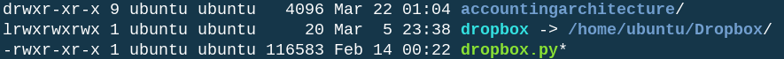
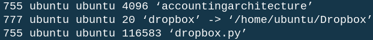

Security
Accounting Architecture

Although security and control are often used interchangeably, the Security block of the Control section covers only some control activities. It is one part of a greater framework that serves to protect an information system and its data. Security focuses heavily on access controls which (1) determine what a user is authorized to do and (2) prevent any unauthorized activities. Given the frequency of cyber incidents, preventing unauthorized access is a key goal of a control framework.
Why Security?
The purpose of security is two-fold. First, security prevents outsiders from gaining access to the information system. Because cyber incidents initiated by outsiders are so visible and costly, this purpose is a primary focus of security measures. However, outsiders are not the only source of risk. Insiders are frequently the cause of cyber incidents and other forms of fraud. Security prevents insiders from gaining access to content that would increase the opportunity to commit fraud.

Trust Services Criteria

The system is protected against unauthorized access, use, or modification.
Access controls promote system security in three ways:
- Permissions determine what users are authorized to do.
- Authentication allows authorized users to identify themselves.
- Hardening prevents unauthorized access.
Access
Permissions provide users with physical and digital access to physical and digital resources. Physical resources are assets (e.g., raw materials, inventory, or checks), and digital resources are computing devices (e.g., personal computers, servers, or storage drives), as well as the data stored on computing devices. The risk of theft emphasizes the need to restrict physical access to physical resources. The threat of cyber incidents and fraud necessitates the need to restrict digital access to digital resources. Digital access determines which computing devices a user can access and which data objects (i.e., files, folders, databases) a user can manipulate. The principles are the same whether digital access is access to personal devices and local data or access from a client to a server.
Database Permissions
Database permissions identify which users can (1) access the database and (2) initiate the four primary storage functions: create, read, update, and delete (CRUD). Create allows users to create new tables and add new records to an existing table; read allows users to view existing tables and records; update allows users to modify existing records to replace values of certain attributes with new values; delete allows users to remove records and tables from the database. These four functions map directly into SQL commands. SELECT reads tables and records. CREATE and INSERT INTO create new tables and add records to existing tables, respectively. UPDATE updates existing records. DROP TABLE and DELETE delete tables and records, respectively.
File Read and Write
Permissions in common file systems are similar to database permissions, but they are slightly less granular. Instead of identifying permissions for four storage functions, file systems focus on three functions: read, write, and execute. The file system read permission is similar to the database system read permission. It allows users to view the contents of a file. The other two file system functions are less similar to database functions. The file system write function provides the user the ability to add to, alter, and delete files similar to the create, update, and delete database functions. The read and write file system functions and the CRUD database functions match two of the three protections in the AICPA definition of security: access (read) and modification (write).
Folder Read and Write
File systems comprise both files and folders, and although the files and folders have read and write permissions, the interpretation differs between them. Folder read permissions allow the user to list the files and sub-folders in a folder in the terminal, but the user needs read permissions to the individual files within the folder in order to view the contents of these files. Folder write permissions allow a user to add files to a folder and to delete the folder. Deleting a folder also deletes all files in the folder, even if the user has no write access to the files. Both read and write permissions are important for determining access to files in a file system, but the third permission (i.e., execute) is also necessary.
Execute
The third protection in the AICPA definition of security is use. Unlike databases, which only store data, file systems also store software applications. Using applications maps into the file system permission of execute. For files in a file system, execute governs launching applications.
Folders also have an execute permission, which is very different from the file execute permission. To execute a folder means to open the folder and access its contents. Without execute permissions, the user could not read, write, or execute any of the files in the folder, regardless of the permissions the user has to the files in the folder. The execute permission is even necessary to open the folder in a graphical file browser on desktop operating systems.
Protect Yourself
Different file system permissions protect against different risks. One risk, and perhaps the most important risk, to protect against is unauthorized viewing of confidential data. This is the risk that the majority of cyber incidents exploit. Restricting read access to sensitive files and databases reduces the likelihood that unauthorized individuals will see confidential data. Another risk to protect against is launching of unauthorized applications. Software applications can access file and database systems, as well as computer hardware through the operating system kernel. Malware (i.e., malicious software) can take control of a system and leak or destroy sensitive data. Restricting execute permissions can prevent unauthorized users from launching software that will infect or compromise a device or network.
Me Against the World
Different users need different access to file systems, and restricting unauthorized access should not remove functionality for authorized users. In addition to three functions (read, write, and execute), file permissions also apply separately to three different types of users: user, group, and others. User is the owner, usually the creator, of a file or folder. Group is a collection of users that need some access but less access than the owner. The owner may or may not be a member of the group. Others are every other authorized and unauthorized user. Whatever permissions others have, anyone who gains access to the file system can do. As a result, others are frequently referred to as world. Ownership and permissions are automatically set when a file or folder is created, but they can be changed thereafter by anyone with write permissions.
Symbolic Notation
UNIX-like (i.e., POSIX) operating systems display file permissions in two different but equivalent ways. One is more readable and one is more concise. Symbolic notation, the more readable format, uses ten characters to explain whether the user, group, or others can read (r), write (w), or execute (x). Missing permissions are replaced with hyphens.
First Character
Symbolic notation uses nine characters or three triads to identify permissions. Each triad applies to one type of user, first user, then group, then others. However, the symbolic notation string contains ten total characters. The first character identifies the file type. Frequently, this will be a regular file (-), a folder or directory (d), or a link (l) to another regular file or folder, although other file types also exist.
This image shows symbolic permissions, as well as user and group for one folder, one link and one regular file. In this case, ubuntu is the name of the owner, and the name of the group is also ubuntu.)
Octal Permissions
Numeric notation, frequently referred to as octal or octet permissions, uses base-8 notation to report permissions. In this notation, ‘read’ receives a value of 4, ‘write’ a value of 2, and ‘execute’ a value of 1. These are added together to obtain one value for each of three significant digits. The first digit reports user permissions, the second reports group permissions, and the third reports others permissions.
(This image shows the same files with the permissions as the previous image for purposes of comparing numeric and symbolic notation.)
One User to Rule Them All
In any system, whether file or database, every data object must have an owner. In UNIX-like operating systems, most users only own content that they create. This prevents unauthorized manipulation of system files. These files belong to the root user, also called the superuser or system user. In addition to owning the system files, the root user has full access to all files owned by any other user. Popular database systems also employ a root user who has all privileges and can grant those privileges to other users. Because permissions can be difficult to navigate, some succumb to the temptation to run all applications as the root user. This is a worst-case scenario for security; it increases the likelihood of unauthorized or unintended changes to the system. Consistent use of the root user is a red flag that proper IT controls are not in place.
Sudo
A normal user must obtain root privileges in order to alter the system (i.e., edit and delete system files or install applications). In UNIX-like systems, this is often done by prepending ‘sudo’ to any command that requires elevated privileges. (For example, sudo is only necessary for chown and chmod commands if the user has no write access to the file or folder or its contents.)

Groups
Users can belong to multiple groups in UNIX-like systems. These groups frequently have no useful interpretation outside of the system because they are designed to assign control of software and hardware. For example, the ‘storage’ group allows its members to access storage volumes, such as the internal hard drive or external USB drives.
Users can also create additional groups in a UNIX-like system to serve business purposes. Creating business groups allows owners to have primary access to files and for group members to have lesser access but more access than others (e.g., the owner has read-write access, group members have read-only access, and others have no access).
Role-Based Access Control (RBAC)
Unfortunately, the emphasis of owner permissions over group permissions is incompatible with an important tenet of access controls: permissions should be role- and not user-based. Individual employees should not have access based on who they are, but rather based on their job description. By default, UNIX-like systems are not equipped to set this kind of role-based permission. However, supplemental tools exist that allow for assigning users in a UNIX-like system to roles. Two popular examples are Security-Enhanced Linux (SELinux), which controls permissions on a single computer, and Lightweight Directory Access Protocol (LDAP), which controls permissions on a network. These tools are more complicated to administrate, but they can map a user to a role and the role to permissions.
Physical Access
Digital permissions serve to restrict digital access to digital resources. However, an often overlooked risk is the risk of physical access to digital resources. Physical access to digital resources is access to the computer and network hardware that store those resources (e.g., a server room that houses server or network hardware). Digital permissions only serve to protect digital resources if users cannot gain unauthorized physical access. A user who can gain unauthorized physical access to a digital resource can steal it and its data, make it unavailable to other users, or destroy it. Additionally, given enough time, a user with physical access to data can gain digital access, regardless of digital permissions. No amount of digital permissions replaces the need for physical permissions. Physical access is total access.
Authentication
Permissions are the first security tool. They determine what an authorized user may do. However, authorized users must be able to identify themselves in order to be awarded access. Authentication uses login credentials (i.e., usernames and passwords) as the security tool that allows authorized users to identify themselves. Authentication has three forms:
- Something the user knows
- A password or passphrase
- Something the user has
- A badge, key card, or code generator
- Something the user is
- Biometrics, such as face, voice, or thumb print
Secure Passwords
The protection that passwords provide is only effective if an unauthorized user cannot guess the password. Brute-force attacks involve a computer randomly guessing what a password might be and attempting to log in with that password. Simple passwords, such as words commonly found in the dictionary or simple strings of numbers, are easy targets because of dictionary attacks, brute-force attacks that quickly try every word in the dictionary. Requiring long (e.g. >12 characters), frequently changed (e.g., every 90 days), complex (e.g., upper- and lowercase letters, numbers, and special characters) passwords reduces the success of brute-force attacks. However, complex passwords are only effective if users can remember them without writing them down and storing them in an accessible location (e.g., next to that user's workstation).
Disagree to Disagree
Different groups have differing beliefs on the best type of secure password. Some like the passphrase which essentially converts a, potentially nonsensical, sentence into a password (e.g., iamamericaandsocanyou). The benefits of a passphrase are length and ease of remembering (i.e., the user is less likely to write it down). It is possible to add uppercase letters, numbers, special characters, and even spaces to make the passphrase complex and more secure.
Others prefer the randomly generated password (e.g., qt^&P07*_!gh$) because it has no relation to any words. Because this is virtually impossible to remember, users who prefer random passwords also prefer password managers to store usernames and passwords.
Social Engineering
Attackers also use social engineering to acquire passwords. This involves creating a seemingly legitimate situation to convince the user to disclose login credentials. This frequently involves phishing in which the attacker poses as an authorized individual (e.g., customer service rep, supervisor, or IT employee) and asks for username and password. These attacks often involve spoofing (i.e., making an email, URL, or Web site look official). This is one of the weaknesses of authentication by something the user knows: users can share what they know. One of the benefits of randomly-generated passwords is that users are less likely to remember and be able to share them. Additional protections against social engineering are policies against asking for or revealing user passwords and multifactor authentication.
Keylogging
Attackers can also use keyloggers to gain access to login credentials. Keyloggers can be either hardware or software, but their purpose is to log or record the keystrokes of an authorized user. By recording keystrokes, an attacker can learn anything that a user types into the infected computer. Attackers require physical access in order to plant hardware keyloggers. This is one example of the threat that physical access can pose for digital resources. Software-based keylogging often comes from cross-site scripting (XSS) and man-in-the-middle (MITM) attacks. XSS attacks involve executing attack code when a user visits a legitimate Web site, and MITM involves intercepting network communication between two devices.
Multifactor Authentication
Security and convenience are always trade-offs. Anything that is more difficult for unauthorized users to access is also more difficult for authorized users to access. However, in many situations, the cost of added inconvenience is well worth the reduction in risk. One form of authentication is rarely enough to avoid problems. Passwords can be compromised through brute force or social engineering, key cards go missing, face or voice recognition can be faked. Multifactor authentication, also called two-form authentication, pairs two forms of authentication with each other, generally a password or passphrase with a badge, ID card, biometric scan, or time-based code.
Time-based Codes
Although users can change passwords, over short periods of time (e.g., days or weeks), a password remains static. Time-based codes address the weakness of static passwords by creating a code that changes frequently, usually every minute. This form of multifactor authentication involves a user entering a code after providing login credentials. Historically, users would need to keep a small device with them that displayed the current code, but in the era of smartphones, these codes are often transmitted by SMS or mobile app. In order to guess the code, an attacker would need to have stolen a device or have guessed the algorithm that determines the sequence of codes. The latter is unlikely, and the former depends on the care the user places on protecting the device.
Remote Authentication
Just as an LDAP server can store permissions, it can also store credentials. This is handy for allowing users to identify themselves on multiple machines on the same network, but in order for it to work, the user must use a device that is already part of the LAN. Remote Authentication Dial-in User Service (RADIUS) allows users with devices not connected to the LAN (i.e., WAN users) to authenticate themselves in order to connect to the LAN and access network resources. RADIUS is also the authentication service used to allow devices to gain Wi-Fi Protected Access (WPA) to enterprise wireless local area networks (WLAN). Unlike WPA-Personal that is intended for access home wireless networks and simply uses a pre-shared key for authenticating all authorized users, WPA-Enterprise uses a RADIUS server to authenticate each individual authorized user.
Network Sniffing
Having strong passwords is also important for remote authentication in order to join a network. Although methods exist to protect data while in transit between two networked devices, a primary purpose of local-area networks is to create a secure network for devices to communicate with one another. Unauthorized access to a network can result in unauthorized access to data, even if an attacker gains no access to a single device on the network. Network sniffing involves “listening” to network communication in order to read data in transit. Network sniffing can reveal the contents of emails, shared files, even login credentials shared between a client and a server.
Hardening
Permissions and authentication govern authorized access, but they are useless if unauthorized users can find a way to circumvent them. Hardening prevents unauthorized users from bypassing permissions and authentication and gaining access to a system by reducing the system's surface of attack (i.e., the number of potential targets for a cyber attack):
- Enabling packet filters restricts access to active network devices.
- Disabling services reduces the number of active network ports.
- Deleting old permissions and credentials prevents formerly authorized users from using resources fraudulently.
- Patching removes exploits in information system software.
On Again, Off Again
Because it is possible to use authentication protocols to access a LAN from the Internet, it can also be possible to gain unauthorized access. No Internet-connected device is inherently safe. Firewalls, or more generally packet filters, restrict network traffic to and from network ports on protected devices. Firewalls are only necessary to protect open ports. Open ports are TCP and UDP ports that actively listen for (i.e., receive) network traffic. Server daemons need open ports in order to function (e.g., web and email servers and multiplayer online games), but each open port is vulnerable. As a result, in addition to using firewalls, the best method for protecting a network device is to disable all unnecessary services to close as many ports as possible.
Isolation
When attackers gain unauthorized access to a network-connected device, they can use that access to attack other devices on the same network. As a result, one method of hardening is to isolate services and computing environments from one another. This is one of the primary roles of both virtualization and containerization. Virtual machines and containers create environments that are isolated from each other. Any application run in a container cannot access any other container or the host kernel, and any operating system run in a virtual machine cannot access any other virtual machine or the computer hardware.
Deauthorization
Permissions and authentication allow authorized users to perform intended functions. As users change roles or leave an organization, those same permissions and authentication credentials permit unintended and unauthorized access. This is especially a concern when employees leave their jobs on negative terms and would use their prior credentials for nefarious purposes. All organizations should have a policy for the deletion of permissions and credentials as soon as any user's authorization level changes.
This is one of the benefits of role- over user-based permissions. When a user changes roles, instead of needing to change the user's access to each individual digital resource, assigning the user to a new role can execute all access changes at once.
Exploited
Most access control tools prevent unauthorized access to digital resources. However, 100% prevention is not possible because hackers continually identify new attack methods. Many of these come through vulnerabilities, or exploits in existing software that attackers can use to gain access, sometimes root access, to computing devices. Using an exploit, an attacker can control the device from a Command and Control server (C&C). A C&C can steal data or take over the device completely, creating a zombie. Exploits that are not yet known to the software developer are known as zero-day exploits, and no amount of preventive security tools can protect against all possibility of the occurrence of new exploits.
Detection and Correction
As a result, detection of exploits and correction by installing software patches is a necessary activity. This is one of the benefits of open source software. Any users can fix an exploit without needing to wait for a software vendor to do so. However, detection and correction of security flaws extends beyond software exploits. No security tool can protect perfectly. Detective controls monitor the network and its devices for failed login attempts, uncommon network traffic, attempts to access or alter data to which the user has insufficient permissions, as well as failed attempts to gain elevated sudo privileges. Correction follows detection by altering permissions, changing login credentials, revising firewall rules, expelling devices from the network, or when necessary, firing employees.
Security Through Obscurity
One popular rationalization for failing to use proper security is the belief that unimportant networks (i.e., the networks of small businesses or residences) are too insignificant to become attack targets. Unfortunately, these individuals fail to realize the ease of finding and compromising weak networks. IPv4 has only 4 billion addresses, and with current computing power, it is possible to scan all of these in a matter of hours, or even minutes. That makes it easy to find all unimportant networks. IPv6, on the other hand, has enough potential addresses to shroud network devices in at least a little bit of obscurity, but that is not an excuse for failing to harden these devices. One important argument against security through obscurity is that insiders may, either intentionally or unintentionally, be the culprits.
Whodunnit?
Security protects against unauthorized access, modification, and use, but it cannot protect against poor judgment or fraud that relies on authorized access. This is especially a problem with viruses, which is a type of malware that forces the computer to perform an unintended task. An unauthorized user may not have the ability to execute the virus, but if a virus is embedded in a seemingly legitimate piece of software, referred to as a trojan horse, then an authorized user can execute it and cause the same amount of damage. Once a virus has been executed, an attacker can control the device just as it could if the attacker had found and taken advantage of a software exploit.
Security is Everyone's Problem
Security is the foundation of the Trust Services framework, and it is the first step toward internal control of an information system. As a wise person once said, “No computing environment is invulnerable. The only secure system is one that is not connected to anything, locked in a secure room, and turned off.” Because control is necessary to combat risks, security should be everyone's responsibility.
Every company should have a team focused on security but it shouldn't end there. Security needs to be the responsibility of everyone.
– George Papayiannis, CTO, Vena Solutions
Appendix:
Linux Security Commands
Permission and Ownership Commands
- sudo chown -v acc test (Change user of file test to acc)
- sudo chown -v :dep test (Change group of file test to dep)
- sudo chown -v acc:dep test (Change user of file test to acc and group to dep)
- sudo chown -v acc:dep Downloads (Change user of Downloads folder in current folder to acc and group to dep)
- sudo chown -vR acc:dep Downloads (Change user of Downloads folder in current folder and all of its contents to acc and group to dep)
- sudo chmod -v 644 test.txt (Change permissions of file test to 644)
- sudo chmod -vR 777 /var/www (Change permissions of www folder in var folder and all its contents to 777)
- sudo chmod -v a+x Documents (Change permissions of Documents folder in current folder to add execute to all users)
- sudo chmod -v u+w,g-x,o-r test.txt (Change permissions of file test to add write to user, remove execute from group, and remove read from others)